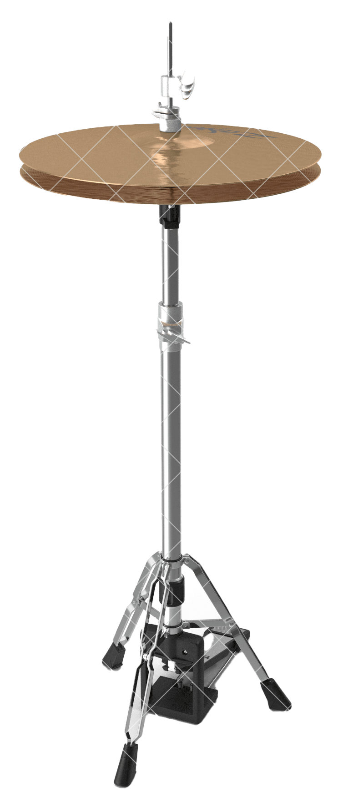
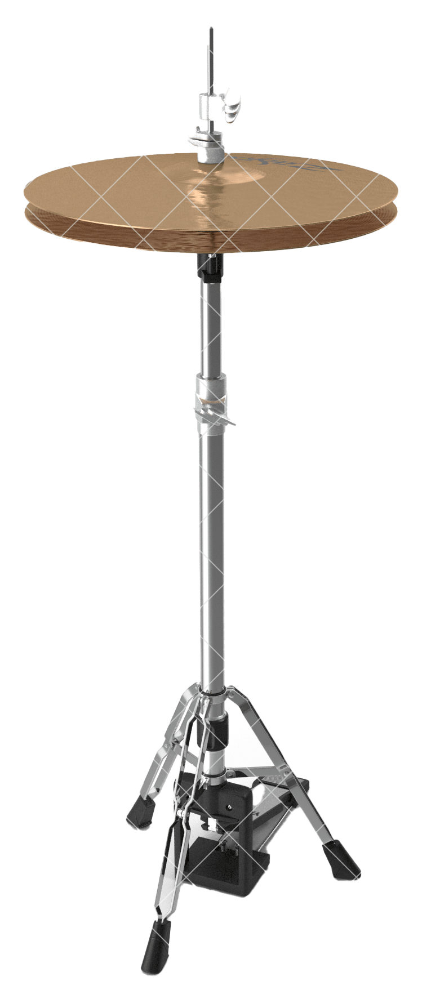

Welcome! This is Paolo's Application for the Founders and Coders adventure!
Hi there!
I am Paolo and this is my application for the Founders and Coders program.
So far, going through the application has already proved to be an extremely valuable experience:
- Interacting with the September 2021 cohort applicants was my first ever exposure to coding with other people, sharing the same passion and approaching the same tasks in such diverse ways.
- The daily challenges kept me active and constantly learning, progressively introducing me to new concepts and ways to approach a problem.
Thank you Founders and Coders üôèüèª
For this and much more, I want to thank Founders and Coders for the amazing opportunity they offer to people like me who approach the complex world of coding and Web Development with no prior related education.
I've found the environment to be really welcoming and overall the perfect setup for personal growth and engagement! Thanks! üòÉüôèüèª
Origins
A little about me
The city you can see in the above picture is Brescia, my hometown, it's relatively small and situated in the northern part of Italy. Most of my family and friends still live there, so I try to visit as often as I can.
After getting a diploma in foreign languages and accounting, I did a post-diploma course on e-business and that's when I first got introduced to HTML, it was around 2002, I'm pretty sure CSS was not that popular yet!
Problem solving and curiousity
I was always intrigued by any form of programming, from composing ring tones on my first ever mobile ( Siemens C25 üò¨ ), to trying to build a landing page for the first company I ever worked for (they quickly told me to get on with the 'real work' .. ), to learning how to use Digital Audio Workstations to compose music and then getting a diploma in Audio Engineering.
Moreover, I had the urge to experience life abroad to broaden my knowledge of the world and generally speaking knowing what was "out there". Fast forward a few years, after various jobs, the economic crisis in my country gave me that push to leave to secure a more promising future and experience all of the above.

Now
Moving to London
Around 7 years ago I took the leap and moved to beautiful, multicultural, and vibrant London! Since then my life has radically changed, I always say that It's been like traveling in time, I would have never experienced so much had I stayed home.
There have been challenging times, but it has always been worth the effort, and thanks to a new friendship I got introduced to the world of Web Development and coding and I've found that spark!
Web Development, yes please!
I have approached studying after work reading books, attending meetups around the city, using online resources such as Codecademy, FreeCodeCamp, tutorials on youtube and courses on Udemy. Through these years I have not always been consistent, life in London is busy, and working silly hours on shifts did not help.
I managed to design and code very simple websites for 2 startups and enjoyed the process very much. Recently, after the first Lockdown, I really thought about what I wanted for my future and decided this year would have been the year to channel all my efforts into Web Development.

Hopes
Why Founders And Coders
I found out about Founders and Coders a few years ago and I always dreamt I could finally get a shot at learning and sharing this passion with other people, getting proper foundations and learning all aspects of coding and Web Design in real-life situations, not just by myself in front of a screen.
I could never afford to live in a city like London and simultaneously take time off to dedicate to this, but it always was in the back of my mind, so I saved up and hoped to be able to give it a go one day.
I believe Founders and Coders can offer more than education and work placement, what is really exciting is the opportunity to connect with a community made of people motivated by positive, healthy values and be rewarded with the invaluable feeling of working for the right cause.
It's the right moment
As I learned in life, often change comes in unexpected ways, this pandemic forced me to leave my job and move back and forth from Italy to stay close to family, but at the same time, it showed me that this was the right moment to invest 6 months of my life to cultivate this passion and apply to the Founders and Coders course.
At this stage of my life I am willing to embrace uncertainty to follow my creative push and will to live and work with passion.
My hope is to meet good people, inspire and be inspired, learn as much as I can and share good times through common efforts, failures and successes.
I would be immensely grateful and excited to be able to enbark on this journey, I really value this as the best unique experience to grow personally and professionaly I could possibly aspire to.
Hopes and Goals
Motivations
My personal motivation is the will to contribute to something meaningful, being part of a community made of similar-minded people, and be of value to whoever we reach with our efforts.
Goals
My goal is to learn lots and write code that can have an impact on people's life. My dream is to work on a music-related project, ideally to shift the way we approach, listen to and learn music, at all ages, and possibly make it a less strict and daunting process, more of a fun, engaging, and rewarding experience.

Fun
My hobbies ?
In my free time, I like being very active, eating well and keeping healthy practicing Yoga, trying to meditate (I still haven't mastered it ..üßòüèΩ). I like trying out new things, like attempting decent baking and kombucha brewing.
I always look for new places to explore or activities to try out in London! I used to go to meetups of all kinds and hopefully, that will be possible again soon!
My passions ?
I am a huge audiophile, and I studied audio engineering at SAE Milan; I play guitar and like to record, mix and master my own music. Whenever I can, I go to gigs, I enjoy both huge music festivals and more intimate gigs in small pubs or private locations, like Sofar Sounds.
Speaking about music ... who has never dreamed about being an amazing drummer?? ehm ...
... if you really want to feel the thunder ... ⚡️ :
Let's create a beat!!
- You shouldn' be pressing any alt keys while playing and your cap locks should be off.
- Turn your machine's volume down before start playing.
- Turn the instrument on clicking on the ON/OFF button.
- Slowly turn the volume up to check how loud the drums are!
- Say hi to the neighbours!
OFF
SPACEBAR = Kick
S = Snare
H = Hi Hat
A = Crash Left
K = Crash Right


 


The people in my life
Finally, I have to mention and thank the most amazing people in my life, without them as a constant source of inspiration and energy, life would not be the same! Michelle and Aaron! ❤️